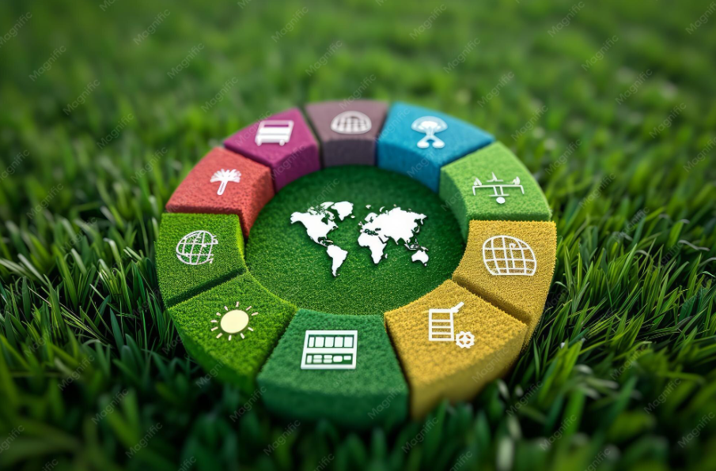

01 / 04
SDGs and Crowdfunding Success
Master's ThesisInvestigated how alignment with the United Nations Sustainable Development Goals influences the success of online crowdfunding campaigns.
The study analyzed 138,393 Kickstarter campaigns from 2020–2024 using Natural Language Processing, Python, R, and econometric techniques.